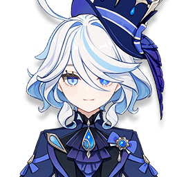
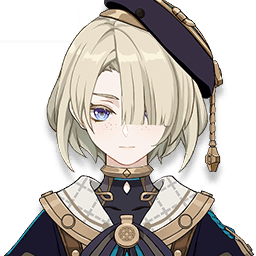
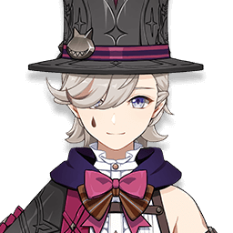
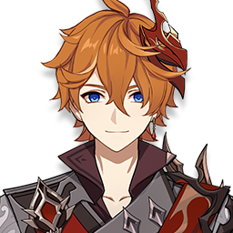
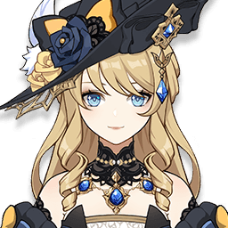

Character Lore
 Arlecchino, formerly known as Peruere, grew up as an orphan under harsh conditions at the House of the Hearth, a Fatui training ground led by Crucabena, the former "Knave" of the Fatui. Here, children were raised to become ruthless fighters, forced into deadly battles to earn the title of "King." Crucabena, known as "Mother" to the orphans, was secretly cruel and would dispose of those who failed or suffered severe injuries. Peruere, withdrawn and observant, developed a rare bond with Clervie, Crucabena's daughter, who longed to escape the House. Tragically, Clervie allowed Peruere to kill her in a duel, sacrificing herself for freedom.
Arlecchino, formerly known as Peruere, grew up as an orphan under harsh conditions at the House of the Hearth, a Fatui training ground led by Crucabena, the former "Knave" of the Fatui. Here, children were raised to become ruthless fighters, forced into deadly battles to earn the title of "King." Crucabena, known as "Mother" to the orphans, was secretly cruel and would dispose of those who failed or suffered severe injuries. Peruere, withdrawn and observant, developed a rare bond with Clervie, Crucabena's daughter, who longed to escape the House. Tragically, Clervie allowed Peruere to kill her in a duel, sacrificing herself for freedom.
 Driven by grief and rage, Peruere confronted and killed Crucabena, a nearly impossible feat achieved through the mysterious curse she bore. Afterward, she was imprisoned in Snezhnaya until pardoned by the Tsaritsa, who granted her the title "The Knave," and Peruere was reborn as Arlecchino. As the new head of the House of the Hearth, she is known as a strict but honest “Father,” caring for the orphans without illusions of affection while preparing them for the brutal world of the Fatui.
Driven by grief and rage, Peruere confronted and killed Crucabena, a nearly impossible feat achieved through the mysterious curse she bore. Afterward, she was imprisoned in Snezhnaya until pardoned by the Tsaritsa, who granted her the title "The Knave," and Peruere was reborn as Arlecchino. As the new head of the House of the Hearth, she is known as a strict but honest “Father,” caring for the orphans without illusions of affection while preparing them for the brutal world of the Fatui.
Thoughts about Arlecchino
*from in game voicelines
| Character | In-game Thoughts |
|---|---|
|  | About The Knave: The Knave? Wh-Who's that? Oh... Uh, I'd already forgotten about her... Keeping such a terrible figure like her in your mind will only give you nightmares. |
|  | About “Father”: Tears: “Father” doesn't like it when children cry. “Father” says tears are the product of emotion and weakness. So when “Father” scolds me, I hold it in until I'm underwater, where no one can hear me cry. At least I have the Romaritime Flowers to keep me company. Teaching: When I was little, I was taught that we should be ready to give our lives for our family. But when "Father" took control, this philosophy changed. "Father" said that every one of us is important, and we have to value our own lives, be our strongest selves, and stand on our own two feet in this world... But actually, all of that's much harder than just following orders. |
|  | About “Father”: Family: "Father" gave us a family, raised us, and told each of us what we should work towards. In turn, what I can do is very simple... Remain loyal, and protect our home. |
|  | About The Knave: Look, I've got nothing against people who have their own agendas — I myself joined the Fatui to get more experience in combat. But I don't like her at all. If she stood to benefit from betraying others, she'd turn against the Tsaritsa in a heartbeat. There isn't a sane bone in her body. |
 | About Arlecchino: She is a formidable but caring leader, and definitely comes across like a master of the house. But she's still a Fatui Harbinger, and that means she must have a more ruthless side. So don't worry - while I'll still always appreciate what she did for Poisson, I'm not about to let my guard down around her completely. |